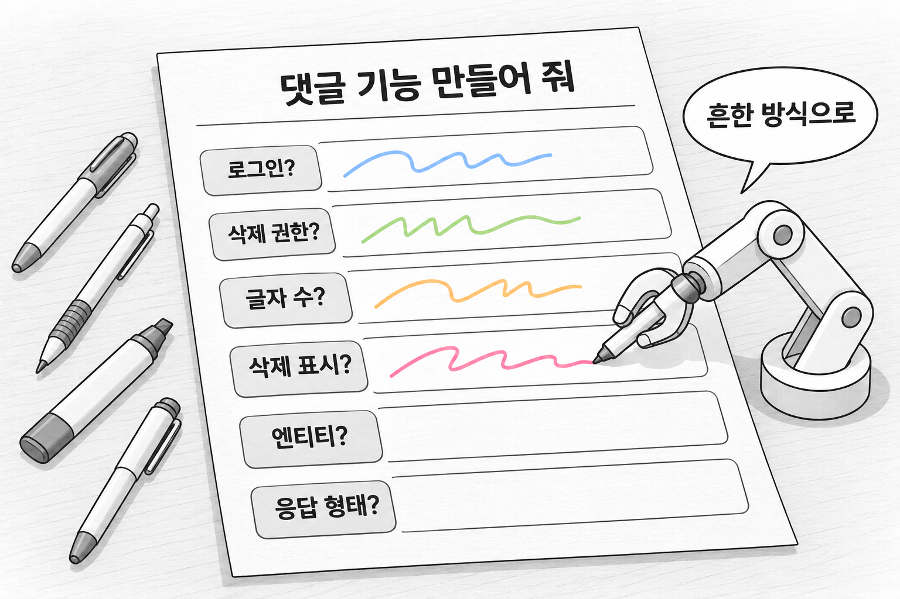
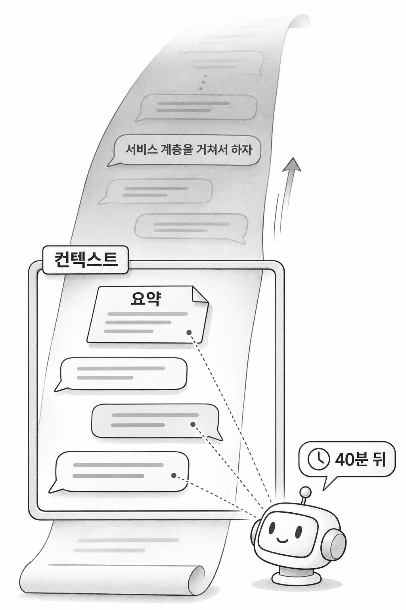

2장. 한 줄 지시는 무엇이 문제일까?
1. 추측으로 채우기
1.1 "댓글 기능 만들어 줘"에 빠진 결정들
이 책의 예제 프로젝트는 이미 만들어 둔 스프링 부트 블로그 API입니다. 여기에 댓글 기능을 넣으려고 Claude Code의 대화창에 다음 한 줄을 입력했다고 합시다.
코드 조각
블로그에 댓글 기능 만들어 줘에이전트는 되묻지 않고 바로 파일을 만들기 시작합니다. 지시는 한 줄이지만 댓글 기능을 만들려면 정해야 할 것이 많습니다. 빠진 결정은 아래 표처럼 두 종류로 나뉩니다.
| 종류 | 정해지지 않은 것 |
|---|---|
| 기능 요구 | 로그인하지 않은 사람도 댓글을 쓸 수 있는가 |
| 기능 요구 | 남의 댓글은 누가 지울 수 있는가 |
| 기능 요구 | 댓글은 몇 자까지 쓸 수 있는가 |
| 기능 요구 | 지운 댓글은 목록에서 사라지는가, "삭제된 댓글"이라는 표시가 남는가 |
| 프로젝트 규칙 | 이미 있는 Reply 엔티티를 쓰는가, Comment 엔티티를 새로 만드는가 |
| 프로젝트 규칙 | 응답은 기존 Resp 형태를 따르는가, 새 형태를 만드는가 |
기능 요구는 기획자나 개발자가 정해야 합니다. 코드를 아무리 읽어도 답이 나오지 않습니다. 프로젝트 규칙은 기존 코드에 답이 있지만, 에이전트가 그 코드를 찾아 읽고 따른다는 보장이 없습니다.
사람 개발자라면 이 가운데 몇 가지는 되물었을 것입니다. 에이전트는 대개 묻지 않고, 정해지지 않은 자리를 학습한 코드에서 가장 흔했던 방식으로 채웁니다. 이것이 한 줄 지시의 첫 번째 문제입니다. 말하지 않은 요구를 에이전트가 추측으로 채웁니다.

1.2 한 줄 지시로 나온 코드의 다섯 가지 문제
한 줄 지시를 받은 에이전트는 다음과 같은 컨트롤러를 자주 만듭니다. 잘못된 예로 보여 주는 코드이므로 프로젝트에 넣지 않습니다.
코드 조각
// 요구를 한 줄로만 주었을 때 흔히 나오는 코드 (잘못된 예)
@RestController
@RequiredArgsConstructor
public class CommentController {
private final CommentRepository commentRepository;
@PostMapping("/comments")
public Comment save(@RequestBody Comment comment) {
return commentRepository.save(comment);
}
}컴파일도 되고, 보안 설정이 없는 새 프로젝트라면 댓글 저장도 됩니다. 스프링 부트 예제로 보면 흠잡을 곳이 적습니다. 하지만 이 블로그 프로젝트의 규칙에 비춰 보면 다섯 군데가 어긋납니다.
| 번호 | 생성된 코드 | 이 프로젝트의 방식 |
|---|---|---|
| 1 | Comment 엔티티를 새로 만들었다 | 이미 있는 Reply 엔티티와 reply_tb 테이블을 쓴다 |
| 2 | 컨트롤러가 리포지토리를 직접 호출한다 | 컨트롤러는 서비스만 호출하고, 서비스가 리포지토리를 호출한다 |
| 3 | 엔티티를 요청과 응답에 그대로 쓴다 | 요청 · 응답 전용 record를 쓴다 |
| 4 | 엔티티를 그대로 반환한다 | 성공 응답은 Resp.ok(...)로 감싼다 |
| 5 | 주소가 /comments다 | /api/로 시작하는 주소를 쓴다 |
1번은 같은 개념의 테이블이 둘로 갈라지는 문제입니다. 이미 쌓인 댓글 데이터는 reply_tb에 있는데 새 코드는 다른 테이블을 쓰게 됩니다. 2번과 3번은 계층 규칙과 요청 · 응답 객체 규칙을 어긴 것입니다. 컨트롤러가 리포지토리를 바로 부르니 로그인 검사나 길이 검사를 넣을 서비스 계층이 아예 없습니다. 4번 때문에 클라이언트는 댓글 API에서만 다른 형태의 응답을 받습니다.
5번은 겉으로 잘 드러나지 않습니다. 예제 프로젝트의 SecurityConfig는 /api/로 시작하는 주소에만 접근 규칙을 정해 두었습니다. 그래서 /comments로 들어오는 요청은 마지막 규칙에 걸려 모두 차단됩니다. 코드에 문법 오류가 없으니 원인을 찾는 데 시간이 걸립니다.
다섯 문제 모두 에이전트가 틀린 코드를 쓴 탓이 아닙니다. 에이전트는 스프링 부트 프로젝트에서 흔히 쓰는 방식을 골랐을 뿐인데, 그 방식이 이 프로젝트의 방식과 달랐습니다. 지시에 없는 결정은 이렇게 "그럴듯하지만 우리 것이 아닌" 코드로 돌아옵니다.
2. 결정 사라짐
2.1 대화에서 합의한 결정이 사라지는 이유
첫 번째 문제를 피하려면 빠진 결정을 대화로 알려 주면 될 것 같습니다. 실제로 대화 초반에 "댓글 저장은 기존처럼 서비스 계층을 거쳐서 하자"고 말하면 에이전트는 그대로 따릅니다. 그런데 작업을 40분쯤 이어 가다 보면 에이전트가 컨트롤러에서 리포지토리를 직접 호출하는 코드를 다시 쓰기도 합니다.
에이전트가 고집을 부린 것은 아닙니다. 1장에서 본 것처럼 에이전트는 컨텍스트(context) 안에 있는 글만 보고 판단합니다. 컨텍스트는 에이전트가 한 번에 읽고 참고할 수 있는 글의 범위입니다. 대화가 길어져 이 범위가 차면 앞부분이 압축(compaction)되어 요약으로 바뀝니다. 요약 과정에서 초반의 합의는 한 줄로 줄거나 빠질 수 있습니다. 새 대화에는 이전 대화의 내용이 처음부터 들어 있지 않습니다.
이것이 한 줄 지시의 두 번째 문제입니다. 대화에서 합의한 결정은 대화가 길어지거나 바뀌면 사라집니다. 결정을 대화로만 전하면 첫 번째 문제를 풀어도 시간이 지나면 같은 문제가 다시 생깁니다.

2.2 대화에만 있는 결정과 파일에 적은 결정
저장소 안의 파일은 대화가 길어져도 사라지지 않습니다. 에이전트는 필요할 때마다 파일을 다시 읽을 수 있고, 새 대화를 시작해도 마찬가지입니다. 같은 결정이라도 어디에 두느냐에 따라 아래 표처럼 남는 정도가 다릅니다.
| 상황 | 대화에만 있는 결정 | 파일에 적은 결정 |
|---|---|---|
| 대화가 길어지면 | 요약되거나 밀려난다 | 그대로 남는다 |
| 새 대화를 시작하면 | 없다 | 다시 읽을 수 있다 |
| 다른 팀원이 작업하면 | 전달되지 않는다 | 저장소에서 함께 본다 |
| 검토와 이력 | 남지 않는다 | 풀 리퀘스트와 커밋에 남는다 |
표의 아래 두 행은 팀으로 일할 때 차이가 커집니다. 내가 에이전트와 나눈 대화는 내 화면에만 있습니다. 동료가 다른 대화창에서 같은 기능을 고치면, 그 대화의 에이전트는 내가 합의한 결정을 알 길이 없습니다. 파일에 적은 결정은 Git으로 공유되고, 누가 언제 바꿨는지도 커밋에 남습니다.
3. 해결의 방향 — 결정을 파일에 적기
두 문제를 함께 보면 해결의 방향이 나옵니다. 먼저 에이전트가 추측하지 않도록 빠진 결정을 미리 정합니다. 그 결정은 대화가 아니라 저장소 안의 파일에 적습니다. 마지막으로 에이전트가 코드를 쓰기 전에 그 파일을 읽게 합니다.
1.1의 표에 이 방향을 대 보면 결정마다 적을 자리가 보입니다. "로그인한 사람만 댓글을 쓴다"나 "댓글은 작성자만 지운다" 같은 기능 요구는 이번 기능을 다루는 문서에 적습니다. "컨트롤러는 서비스만 호출한다", "성공 응답은 Resp.ok(...)로 감싼다" 같은 프로젝트 규칙은 기능과 상관없이 늘 지키는 규칙이므로 따로 한 곳에 모아 둡니다. 그러면 기능을 새로 만들 때마다 같은 규칙을 다시 말하지 않아도 됩니다.
다만 파일 하나에 결정을 몰아 적는 것만으로는 부족합니다. 무엇을 먼저 정하고 무엇을 나중에 정할지, 어떤 문서를 누가 검토할지까지 정해야 이 방법을 실제 작업에 쓸 수 있습니다. 3장에서 다룰 스펙 주도 개발(SDD)은 이 방향을 문서의 종류와 작업 순서로 정리한 방법입니다.